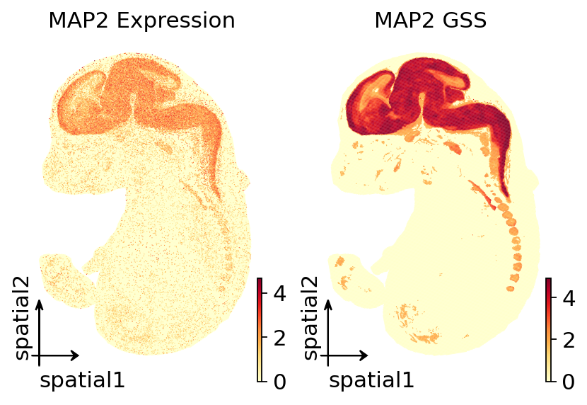

GWAS pipeline 3 — Spatially Resolved GWAS Mapping#
This notebook walks through the complete OmicVerse gsMap integration using the official gsMap example dataset:
find_latent_representationlatent_to_genequick-mode
generate_ldscorequick-mode
spatial_ldsccauchy_combinationVisualisation with the standalone plotting methods
The main dataset is the official gsMap example E16.5_E1S1.MOSTA.h5ad (121,767 spots) and the GWAS trait is IQ_NG_2018.sumstats.gz. All intermediate and final outputs are written to /data/hulei/gsmap_omicverse_tutorial_run.
Note: This tutorial uses
ov.pl.embedding(basis='spatial')for spatial plotting, which only requiresobsm['spatial']and works without H&E images.
import warnings
warnings.filterwarnings("ignore", category=UserWarning)
warnings.filterwarnings("ignore", category=FutureWarning)
from pathlib import Path
import numpy as np
import pandas as pd
import scanpy as sc
import omicverse as ov
import matplotlib.pyplot as plt
ov.plot_set()
np.random.seed(0)
🔬 Starting plot initialization...
🧬 Detecting GPU devices…
✅ NVIDIA CUDA GPUs detected: 8
• [CUDA 0] NVIDIA GeForce RTX 4090 D
Memory: 23.5 GB | Compute: 8.9
• [CUDA 1] NVIDIA GeForce RTX 4090 D
Memory: 23.5 GB | Compute: 8.9
• [CUDA 2] NVIDIA GeForce RTX 4090 D
Memory: 23.5 GB | Compute: 8.9
• [CUDA 3] NVIDIA GeForce RTX 4090 D
Memory: 23.5 GB | Compute: 8.9
• [CUDA 4] NVIDIA GeForce RTX 4090 D
Memory: 23.5 GB | Compute: 8.9
• [CUDA 5] NVIDIA GeForce RTX 4090 D
Memory: 23.5 GB | Compute: 8.9
• [CUDA 6] NVIDIA GeForce RTX 4090 D
Memory: 23.5 GB | Compute: 8.9
• [CUDA 7] NVIDIA GeForce RTX 4090 D
Memory: 23.5 GB | Compute: 8.9
____ _ _ __
/ __ \____ ___ (_)___| | / /__ _____________
/ / / / __ `__ \/ / ___/ | / / _ \/ ___/ ___/ _ \
/ /_/ / / / / / / / /__ | |/ / __/ / (__ ) __/
\____/_/ /_/ /_/_/\___/ |___/\___/_/ /____/\___/
🔖 Version: 2.2.1rc1 📚 Tutorials: https://omicverse.readthedocs.io/
✅ plot_set complete.
Before you start#
Data used in this tutorial#
ST data:
/data/hulei/Study/gsmap_downloads/example_extract/gsMap_example_data/ST/E16.5_E1S1.MOSTA.h5adGWAS data:
/data/hulei/Study/gsmap_downloads/example_extract/gsMap_example_data/GWAS/IQ_NG_2018.sumstats.gzgsMap quick-mode resources:
/data/hulei/Study/gsmap_downloads/resource_extract/gsMap_resource
Output directory#
/data/hulei/gsmap_omicverse_tutorial_run
Running notes#
The full E16.5_E1S1.MOSTA.h5ad contains more than 100,000 spots. The notebook loads the full official dataset without downsampling.
Step 0 — Load the official gsMap example data#
Read the official MOSTA embryo section and prepare the input for gsMap.
Load
E16.5_E1S1.MOSTA.h5adUse the built-in
annotationcolumn for tissue labelsPreserve the original spatial coordinates in
obsm['spatial']Preserve the
countlayer for the latent-representation step
# Download the resources:
wget https://yanglab.westlake.edu.cn/data/gsMap/gsMap_resource.tar.gz
tar -xvzf gsMap_resource.tar.gz
# Download example data
wget https://yanglab.westlake.edu.cn/data/gsMap/gsMap_example_data.tar.gz
tar -xvzf gsMap_example_data.tar.gz
dataset_path = Path('/data/hulei/Study/gsmap_downloads/example_extract/gsMap_example_data/ST/E16.5_E1S1.MOSTA.h5ad')
sumstats_file = Path('/data/hulei/Study/gsmap_downloads/example_extract/gsMap_example_data/GWAS/IQ_NG_2018.sumstats.gz')
gsmap_resource_dir = Path('/data/hulei/Study/gsmap_downloads/resource_extract/gsMap_resource')
tutorial_workdir = Path('/data/hulei/gsmap_omicverse_tutorial_run')
adata = sc.read_h5ad(dataset_path)
adata.obs['annotation'] = adata.obs['annotation'].astype('category')
adata
AnnData object with n_obs × n_vars = 121767 × 28204
obs: 'n_genes_by_counts', 'log1p_n_genes_by_counts', 'total_counts', 'log1p_total_counts', 'annotation', 'Regulon - AI987944', 'Regulon - Alx1', 'Regulon - Alx4', 'Regulon - Arid3a', 'Regulon - Arnt2', 'Regulon - Arx', 'Regulon - Atf1', 'Regulon - Atf2', 'Regulon - Atf3', 'Regulon - Atf4', 'Regulon - Atf6', 'Regulon - Atoh1', 'Regulon - Bach2', 'Regulon - Barhl1', 'Regulon - Barhl2', 'Regulon - Barx1', 'Regulon - Bcl6', 'Regulon - Bclaf1', 'Regulon - Bdp1', 'Regulon - Bhlhe40', 'Regulon - Bmyc', 'Regulon - Brca1', 'Regulon - Brf1', 'Regulon - Brf2', 'Regulon - Cdx1', 'Regulon - Cdx2', 'Regulon - Cebpa', 'Regulon - Cebpb', 'Regulon - Cebpe', 'Regulon - Cic', 'Regulon - Clock', 'Regulon - Creb1', 'Regulon - Creb3l1', 'Regulon - Creb3l2', 'Regulon - Creb5', 'Regulon - Crebl2', 'Regulon - Ctcf', 'Regulon - Ctcfl', 'Regulon - Cux1', 'Regulon - Dbp', 'Regulon - Dbx1', 'Regulon - Ddit3', 'Regulon - Dlx1', 'Regulon - Dlx2', 'Regulon - Dlx3', 'Regulon - Dlx5', 'Regulon - Dlx6', 'Regulon - Dmbx1', 'Regulon - E2f1', 'Regulon - E2f2', 'Regulon - E2f3', 'Regulon - E2f4', 'Regulon - E2f5', 'Regulon - E2f6', 'Regulon - E2f7', 'Regulon - E2f8', 'Regulon - Ebf1', 'Regulon - Egr1', 'Regulon - Egr3', 'Regulon - Elf1', 'Regulon - Elf2', 'Regulon - Elf3', 'Regulon - Elf4', 'Regulon - Elk3', 'Regulon - Elk4', 'Regulon - Emx1', 'Regulon - Emx2', 'Regulon - En1', 'Regulon - En2', 'Regulon - Ep300', 'Regulon - Erg', 'Regulon - Esrra', 'Regulon - Esrrg', 'Regulon - Ets1', 'Regulon - Ets2', 'Regulon - Etv6', 'Regulon - Evx1', 'Regulon - Ezh2', 'Regulon - Fli1', 'Regulon - Fos', 'Regulon - Fosl1', 'Regulon - Fosl2', 'Regulon - Foxa1', 'Regulon - Foxa2', 'Regulon - Foxa3', 'Regulon - Foxc1', 'Regulon - Foxc2', 'Regulon - Foxd1', 'Regulon - Foxd2', 'Regulon - Foxd3', 'Regulon - Foxf1', 'Regulon - Foxf2', 'Regulon - Foxg1', 'Regulon - Foxi1', 'Regulon - Foxj1', 'Regulon - Foxj2', 'Regulon - Foxk1', 'Regulon - Foxl1', 'Regulon - Foxl2', 'Regulon - Foxn2', 'Regulon - Foxn3', 'Regulon - Foxo1', 'Regulon - Foxo3', 'Regulon - Foxo4', 'Regulon - Foxp1', 'Regulon - Foxp2', 'Regulon - Foxp3', 'Regulon - Foxp4', 'Regulon - Foxq1', 'Regulon - Gabpa', 'Regulon - Gabpb1', 'Regulon - Gata1', 'Regulon - Gata2', 'Regulon - Gata3', 'Regulon - Gata4', 'Regulon - Gata5', 'Regulon - Gata6', 'Regulon - Gbx1', 'Regulon - Gbx2', 'Regulon - Gli1', 'Regulon - Gli2', 'Regulon - Glis2', 'Regulon - Gm12845', 'Regulon - Gm14327', 'Regulon - Gm28308', 'Regulon - Gm38394', 'Regulon - Gmeb2', 'Regulon - Grhl1', 'Regulon - Grhl2', 'Regulon - Grhl3', 'Regulon - Gsx1', 'Regulon - Gsx2', 'Regulon - Gtf2f1', 'Regulon - Gtf3c2', 'Regulon - Hcfc1', 'Regulon - Hdac2', 'Regulon - Hes1', 'Regulon - Hes5', 'Regulon - Hif1a', 'Regulon - Hinfp', 'Regulon - Hmga2', 'Regulon - Hmgb3', 'Regulon - Hmgn3', 'Regulon - Hmx1', 'Regulon - Hmx3', 'Regulon - Hnf1b', 'Regulon - Hnf4a', 'Regulon - Hnf4g', 'Regulon - Hoxa10', 'Regulon - Hoxa11', 'Regulon - Hoxa2', 'Regulon - Hoxa3', 'Regulon - Hoxa4', 'Regulon - Hoxa5', 'Regulon - Hoxa7', 'Regulon - Hoxa9', 'Regulon - Hoxb13', 'Regulon - Hoxb3', 'Regulon - Hoxb4', 'Regulon - Hoxb5', 'Regulon - Hoxb6', 'Regulon - Hoxb7', 'Regulon - Hoxb8', 'Regulon - Hoxb9', 'Regulon - Hoxc10', 'Regulon - Hoxc11', 'Regulon - Hoxc13', 'Regulon - Hoxc4', 'Regulon - Hoxc5', 'Regulon - Hoxc6', 'Regulon - Hoxc8', 'Regulon - Hoxc9', 'Regulon - Hoxd1', 'Regulon - Hoxd10', 'Regulon - Hoxd11', 'Regulon - Hoxd12', 'Regulon - Hoxd13', 'Regulon - Hoxd3', 'Regulon - Hoxd8', 'Regulon - Hoxd9', 'Regulon - Hsf2', 'Regulon - Ikzf1', 'Regulon - Irf2', 'Regulon - Irf5', 'Regulon - Irf6', 'Regulon - Irf8', 'Regulon - Irx3', 'Regulon - Isl1', 'Regulon - Isl2', 'Regulon - Jdp2', 'Regulon - Jun', 'Regulon - Junb', 'Regulon - Jund', 'Regulon - Kdm4a', 'Regulon - Kdm5a', 'Regulon - Kdm5b', 'Regulon - Klf10', 'Regulon - Klf13', 'Regulon - Klf15', 'Regulon - Klf16', 'Regulon - Klf2', 'Regulon - Klf3', 'Regulon - Klf4', 'Regulon - Klf5', 'Regulon - Klf6', 'Regulon - Klf7', 'Regulon - Klf8', 'Regulon - Klf9', 'Regulon - Lbx1', 'Regulon - Lef1', 'Regulon - Lhx1', 'Regulon - Lhx2', 'Regulon - Lhx5', 'Regulon - Lhx6', 'Regulon - Lhx8', 'Regulon - Lhx9', 'Regulon - Lmo2', 'Regulon - Lmx1a', 'Regulon - Lmx1b', 'Regulon - Ltf', 'Regulon - Maf', 'Regulon - Mafa', 'Regulon - Mafb', 'Regulon - Mafk', 'Regulon - Max', 'Regulon - Maz', 'Regulon - Mbd1', 'Regulon - Mef2a', 'Regulon - Mef2c', 'Regulon - Mef2d', 'Regulon - Meis1', 'Regulon - Meis2', 'Regulon - Meis3', 'Regulon - Mnx1', 'Regulon - Msc', 'Regulon - Msx1', 'Regulon - Msx2', 'Regulon - Msx3', 'Regulon - Mxi1', 'Regulon - Myb', 'Regulon - Mybl1', 'Regulon - Mybl2', 'Regulon - Myc', 'Regulon - Myf5', 'Regulon - Myf6', 'Regulon - Mynn', 'Regulon - Myod1', 'Regulon - Myog', 'Regulon - Nanos1', 'Regulon - Nelfe', 'Regulon - Neurod1', 'Regulon - Nfatc1', 'Regulon - Nfatc2', 'Regulon - Nfatc3', 'Regulon - Nfatc4', 'Regulon - Nfe2', 'Regulon - Nfe2l1', 'Regulon - Nfe2l2', 'Regulon - Nfic', 'Regulon - Nfil3', 'Regulon - Nfkb1', 'Regulon - Nfkb2', 'Regulon - Nfyb', 'Regulon - Nfyc', 'Regulon - Nhlh2', 'Regulon - Nkx1-1', 'Regulon - Nkx2-1', 'Regulon - Nkx2-4', 'Regulon - Nkx2-5', 'Regulon - Nkx6-1', 'Regulon - Nkx6-2', 'Regulon - Nkx6-3', 'Regulon - Nobox', 'Regulon - Npdc1', 'Regulon - Nr1h3', 'Regulon - Nr1h4', 'Regulon - Nr1i2', 'Regulon - Nr2c1', 'Regulon - Nr2c2', 'Regulon - Nr2f2', 'Regulon - Nr3c1', 'Regulon - Nr4a1', 'Regulon - Nr5a1', 'Regulon - Nr5a2', 'Regulon - Nrf1', 'Regulon - Nucb1', 'Regulon - Olig1', 'Regulon - Olig3', 'Regulon - Onecut1', 'Regulon - Onecut2', 'Regulon - Onecut3', 'Regulon - Otx2', 'Regulon - Ovol2', 'Regulon - Patz1', 'Regulon - Pax5', 'Regulon - Pax6', 'Regulon - Pbx2', 'Regulon - Pbx3', 'Regulon - Pdx1', 'Regulon - Phf8', 'Regulon - Phox2a', 'Regulon - Phox2b', 'Regulon - Pitx1', 'Regulon - Pitx2', 'Regulon - Pknox1', 'Regulon - Plagl1', 'Regulon - Pml', 'Regulon - Pole3', 'Regulon - Pou2f1', 'Regulon - Pou3f1', 'Regulon - Pou3f2', 'Regulon - Pou3f3', 'Regulon - Pou3f4', 'Regulon - Pou4f1', 'Regulon - Pou4f2', 'Regulon - Pou4f3', 'Regulon - Pou6f1', 'Regulon - Ppara', 'Regulon - Pparg', 'Regulon - Ppargc1a', 'Regulon - Prdm16', 'Regulon - Prop1', 'Regulon - Prrx2', 'Regulon - Prrxl1', 'Regulon - Psmd12', 'Regulon - Rad21', 'Regulon - Rara', 'Regulon - Rarb', 'Regulon - Rarg', 'Regulon - Rax', 'Regulon - Rbbp5', 'Regulon - Rcor1', 'Regulon - Rela', 'Regulon - Relb', 'Regulon - Rest', 'Regulon - Rfx2', 'Regulon - Rfx3', 'Regulon - Rfx4', 'Regulon - Rfxap', 'Regulon - Rreb1', 'Regulon - Runx1', 'Regulon - Runx3', 'Regulon - Rxra', 'Regulon - Rxrb', 'Regulon - Rxrg', 'Regulon - Sap30', 'Regulon - Scx', 'Regulon - Setdb1', 'Regulon - Shox2', 'Regulon - Sin3a', 'Regulon - Six1', 'Regulon - Six2', 'Regulon - Six4', 'Regulon - Smad1', 'Regulon - Smad5', 'Regulon - Smarca4', 'Regulon - Smarcb1', 'Regulon - Smarcc2', 'Regulon - Smc3', 'Regulon - Snai3', 'Regulon - Sox10', 'Regulon - Sox11', 'Regulon - Sox12', 'Regulon - Sox13', 'Regulon - Sox15', 'Regulon - Sox17', 'Regulon - Sox18', 'Regulon - Sox2', 'Regulon - Sox21', 'Regulon - Sox3', 'Regulon - Sox4', 'Regulon - Sox7', 'Regulon - Sox8', 'Regulon - Sox9', 'Regulon - Sp1', 'Regulon - Sp2', 'Regulon - Sp3', 'Regulon - Sp4', 'Regulon - Sp6', 'Regulon - Sp7', 'Regulon - Sp8', 'Regulon - Sp9', 'Regulon - Spdef', 'Regulon - Spi1', 'Regulon - Srebf1', 'Regulon - Srebf2', 'Regulon - Srf', 'Regulon - Stat1', 'Regulon - Stat3', 'Regulon - Stat6', 'Regulon - Supt20', 'Regulon - Taf1', 'Regulon - Tagln2', 'Regulon - Tal1', 'Regulon - Tbp', 'Regulon - Tbx1', 'Regulon - Tbx15', 'Regulon - Tbx2', 'Regulon - Tbx4', 'Regulon - Tbx5', 'Regulon - Tcf7', 'Regulon - Tcf7l1', 'Regulon - Tcf7l2', 'Regulon - Tead1', 'Regulon - Tead2', 'Regulon - Tead3', 'Regulon - Tead4', 'Regulon - Tef', 'Regulon - Tfap2a', 'Regulon - Tfcp2l1', 'Regulon - Tfdp1', 'Regulon - Tff3', 'Regulon - Thap1', 'Regulon - Thra', 'Regulon - Thrb', 'Regulon - Tlx2', 'Regulon - Tlx3', 'Regulon - Traf4', 'Regulon - Trim28', 'Regulon - Trp53', 'Regulon - Trp63', 'Regulon - Trp73', 'Regulon - Twist1', 'Regulon - Twist2', 'Regulon - Ubtf', 'Regulon - Uncx', 'Regulon - Usf2', 'Regulon - Vax1', 'Regulon - Vezf1', 'Regulon - Vsx2', 'Regulon - Wt1', 'Regulon - Xbp1', 'Regulon - Xrcc4', 'Regulon - Yy1', 'Regulon - Zbtb14', 'Regulon - Zbtb7b', 'Regulon - Zeb1', 'Regulon - Zfhx2', 'Regulon - Zfhx3', 'Regulon - Zfp110', 'Regulon - Zfp112', 'Regulon - Zfp14', 'Regulon - Zfp143', 'Regulon - Zfp146', 'Regulon - Zfp148', 'Regulon - Zfp189', 'Regulon - Zfp266', 'Regulon - Zfp281', 'Regulon - Zfp369', 'Regulon - Zfp467', 'Regulon - Zfp612', 'Regulon - Zfp641', 'Regulon - Zfp647', 'Regulon - Zfp652', 'Regulon - Zfp672', 'Regulon - Zfp708', 'Regulon - Zfp710', 'Regulon - Zfp729b', 'Regulon - Zfp740', 'Regulon - Zfp950', 'Regulon - Zfp974', 'Regulon - Zfp975', 'Regulon - Zfx', 'Regulon - Zic1', 'Regulon - Zic2', 'Regulon - Zic3', 'Regulon - Zic4', 'Regulon - Zmat4', 'Regulon - Zmiz1', 'Module_1', 'Module_2', 'Module_3', 'Module_4', 'Module_5', 'Module_6', 'Module_7', 'Module_8', 'Module_9', 'Module_10', 'Module_11', 'Module_12', 'Module_13', 'Module_14', 'Module_15', 'Module_16', 'Module_17', 'Module_18', 'Module_19', 'Module_20', 'Module_21', 'Module_22', 'Module_23', 'Module_24', 'Module_25', 'Module_26', 'Module_27', 'Module_28', 'Module_29', 'Module_30', 'Module_31', 'Module_32', 'Module_33', 'Module_34', 'Module_35', 'pct_counts_in_top_50_genes', 'pct_counts_in_top_100_genes', 'pct_counts_in_top_200_genes', 'pct_counts_in_top_500_genes'
var: 'n_cells', 'n_cells_by_counts', 'mean_counts', 'log1p_mean_counts', 'pct_dropout_by_counts', 'total_counts', 'log1p_total_counts', 'Regulon - Alx4', 'Regulon - Arnt2', 'Regulon - Atf1', 'Regulon - Atf3', 'Regulon - Atf4', 'Regulon - Bach2', 'Regulon - Barhl1', 'Regulon - Barhl2', 'Regulon - Barx1', 'Regulon - Bclaf1', 'Regulon - Brca1', 'Regulon - Cdx1', 'Regulon - Cdx2', 'Regulon - Cebpa', 'Regulon - Cebpb', 'Regulon - Cebpe', 'Regulon - Clock', 'Regulon - Creb1', 'Regulon - Creb3l2', 'Regulon - Ctcfl', 'Regulon - Cux1', 'Regulon - Dbp', 'Regulon - Ddit3', 'Regulon - Dlx1', 'Regulon - Dlx2', 'Regulon - Dlx3', 'Regulon - Dlx5', 'Regulon - Dlx6', 'Regulon - Dmbx1', 'Regulon - E2f1', 'Regulon - E2f3', 'Regulon - E2f4', 'Regulon - E2f5', 'Regulon - E2f6', 'Regulon - E2f7', 'Regulon - E2f8', 'Regulon - Egr1', 'Regulon - Egr3', 'Regulon - Elf2', 'Regulon - Elf4', 'Regulon - Elk3', 'Regulon - Elk4', 'Regulon - Emx1', 'Regulon - Emx2', 'Regulon - En2', 'Regulon - Ep300', 'Regulon - Esrra', 'Regulon - Esrrg', 'Regulon - Ets1', 'Regulon - Ets2', 'Regulon - Etv6', 'Regulon - Ezh2', 'Regulon - Fli1', 'Regulon - Fos', 'Regulon - Fosl2', 'Regulon - Foxa1', 'Regulon - Foxa2', 'Regulon - Foxa3', 'Regulon - Foxc1', 'Regulon - Foxc2', 'Regulon - Foxf1', 'Regulon - Foxf2', 'Regulon - Foxi1', 'Regulon - Foxj1', 'Regulon - Foxj2', 'Regulon - Foxl1', 'Regulon - Foxl2', 'Regulon - Foxn2', 'Regulon - Foxo1', 'Regulon - Foxo3', 'Regulon - Foxo4', 'Regulon - Foxp1', 'Regulon - Foxp2', 'Regulon - Foxp4', 'Regulon - Gabpa', 'Regulon - Gata1', 'Regulon - Gata2', 'Regulon - Gata3', 'Regulon - Gata4', 'Regulon - Gata5', 'Regulon - Gata6', 'Regulon - Gbx2', 'Regulon - Gli1', 'Regulon - Gli2', 'Regulon - Glis2', 'Regulon - Gm38394', 'Regulon - Gmeb2', 'Regulon - Grhl1', 'Regulon - Grhl2', 'Regulon - Grhl3', 'Regulon - Gsx1', 'Regulon - Hdac2', 'Regulon - Hes1', 'Regulon - Hinfp', 'Regulon - Hmga2', 'Regulon - Hmgb3', 'Regulon - Hnf1b', 'Regulon - Hnf4a', 'Regulon - Hnf4g', 'Regulon - Hoxa10', 'Regulon - Hoxa11', 'Regulon - Hoxa2', 'Regulon - Hoxa3', 'Regulon - Hoxa5', 'Regulon - Hoxa7', 'Regulon - Hoxa9', 'Regulon - Hoxb3', 'Regulon - Hoxb4', 'Regulon - Hoxb5', 'Regulon - Hoxb6', 'Regulon - Hoxb7', 'Regulon - Hoxb8', 'Regulon - Hoxb9', 'Regulon - Hoxc10', 'Regulon - Hoxc11', 'Regulon - Hoxc13', 'Regulon - Hoxc6', 'Regulon - Hoxc9', 'Regulon - Hoxd11', 'Regulon - Hoxd12', 'Regulon - Hoxd13', 'Regulon - Hoxd9', 'Regulon - Hsf2', 'Regulon - Ikzf1', 'Regulon - Irf2', 'Regulon - Irf5', 'Regulon - Irf6', 'Regulon - Irf8', 'Regulon - Isl1', 'Regulon - Isl2', 'Regulon - Jun', 'Regulon - Junb', 'Regulon - Jund', 'Regulon - Klf2', 'Regulon - Klf3', 'Regulon - Klf4', 'Regulon - Klf5', 'Regulon - Klf6', 'Regulon - Klf8', 'Regulon - Lef1', 'Regulon - Lhx1', 'Regulon - Lhx2', 'Regulon - Lhx5', 'Regulon - Lhx6', 'Regulon - Lhx8', 'Regulon - Lhx9', 'Regulon - Lmx1a', 'Regulon - Ltf', 'Regulon - Maf', 'Regulon - Mafb', 'Regulon - Mafk', 'Regulon - Mbd1', 'Regulon - Mef2a', 'Regulon - Mef2c', 'Regulon - Mef2d', 'Regulon - Mnx1', 'Regulon - Msc', 'Regulon - Mxi1', 'Regulon - Myb', 'Regulon - Mybl1', 'Regulon - Mybl2', 'Regulon - Myc', 'Regulon - Myf5', 'Regulon - Myf6', 'Regulon - Mynn', 'Regulon - Myod1', 'Regulon - Myog', 'Regulon - Nanos1', 'Regulon - Neurod1', 'Regulon - Nfatc1', 'Regulon - Nfatc4', 'Regulon - Nfe2', 'Regulon - Nfic', 'Regulon - Nfkb2', 'Regulon - Nfyb', 'Regulon - Nkx1-1', 'Regulon - Nkx6-2', 'Regulon - Nr1h3', 'Regulon - Nr1i2', 'Regulon - Nr2c1', 'Regulon - Nr4a1', 'Regulon - Nr5a1', 'Regulon - Nr5a2', 'Regulon - Nucb1', 'Regulon - Onecut1', 'Regulon - Onecut2', 'Regulon - Onecut3', 'Regulon - Otx2', 'Regulon - Ovol2', 'Regulon - Pax6', 'Regulon - Pdx1', 'Regulon - Phox2a', 'Regulon - Phox2b', 'Regulon - Pitx2', 'Regulon - Pou2f1', 'Regulon - Pou3f1', 'Regulon - Pou3f3', 'Regulon - Pou4f3', 'Regulon - Pparg', 'Regulon - Prrx2', 'Regulon - Rara', 'Regulon - Rarb', 'Regulon - Rax', 'Regulon - Rela', 'Regulon - Rfx2', 'Regulon - Rfx3', 'Regulon - Rfx4', 'Regulon - Runx1', 'Regulon - Rxra', 'Regulon - Shox2', 'Regulon - Six1', 'Regulon - Six2', 'Regulon - Six4', 'Regulon - Smad1', 'Regulon - Smad5', 'Regulon - Smarcc2', 'Regulon - Snai3', 'Regulon - Sox10', 'Regulon - Sox11', 'Regulon - Sox12', 'Regulon - Sox13', 'Regulon - Sox17', 'Regulon - Sox18', 'Regulon - Sox2', 'Regulon - Sox21', 'Regulon - Sox4', 'Regulon - Sox7', 'Regulon - Sox9', 'Regulon - Sp1', 'Regulon - Sp3', 'Regulon - Sp4', 'Regulon - Sp7', 'Regulon - Spdef', 'Regulon - Spi1', 'Regulon - Srebf2', 'Regulon - Srf', 'Regulon - Stat6', 'Regulon - Supt20', 'Regulon - Taf1', 'Regulon - Tagln2', 'Regulon - Tal1', 'Regulon - Tbp', 'Regulon - Tbx2', 'Regulon - Tbx5', 'Regulon - Tcf7', 'Regulon - Tcf7l1', 'Regulon - Tcf7l2', 'Regulon - Tead1', 'Regulon - Tead2', 'Regulon - Tead3', 'Regulon - Tead4', 'Regulon - Tfap2a', 'Regulon - Tfcp2l1', 'Regulon - Tfdp1', 'Regulon - Tff3', 'Regulon - Thap1', 'Regulon - Tlx2', 'Regulon - Tlx3', 'Regulon - Trp53', 'Regulon - Trp63', 'Regulon - Twist1', 'Regulon - Uncx', 'Regulon - Xbp1', 'Regulon - Yy1', 'Regulon - Zbtb14', 'Regulon - Zfp112', 'Regulon - Zfp14', 'Regulon - Zfp189', 'Regulon - Zfp641', 'Regulon - Zfp672', 'Regulon - Zfp729b', 'Regulon - Zfp740', 'Regulon - Zfp974', 'Regulon - Zfp975', 'Regulon - Zic2', 'Regulon - Zmat4', 'Module_1', 'Module_10', 'Module_11', 'Module_12', 'Module_13', 'Module_14', 'Module_15', 'Module_16', 'Module_17', 'Module_18', 'Module_19', 'Module_2', 'Module_20', 'Module_21', 'Module_22', 'Module_23', 'Module_24', 'Module_25', 'Module_26', 'Module_27', 'Module_28', 'Module_29', 'Module_3', 'Module_30', 'Module_31', 'Module_32', 'Module_33', 'Module_34', 'Module_35', 'Module_4', 'Module_5', 'Module_6', 'Module_7', 'Module_8', 'Module_9'
uns: 'annotation_colors'
obsm: 'spatial'
varm: 'PCs'
layers: 'count'
Step 1 — Create the OmicVerse gsMap object#
ov.genetics.gsmap(...) is the public entry point exposed by OmicVerse.
gsmap_object = ov.genetics.gsmap(adata,
workdir=str(tutorial_workdir),
sample_name='e16_5_e1s1_mosta_full',
annotation='annotation',)
Step 2 — Run find_latent_representation#
This step learns a latent embedding from the expression matrix and the spatial structure.
Key parameters (official defaults)#
Parameter |
Description |
Default |
|---|---|---|
|
Which layer to use as input |
|
|
Full training epochs |
|
|
Number of highly variable genes |
|
|
Feature encoder hidden dims |
|
|
GAT hidden dims |
|
|
PCA dimensions |
|
|
Spatial neighbourhood size |
|
|
GAT attention heads |
|
latent_path = gsmap_object.find_latent_representation(
data_layer='count',
epochs=300,
feat_cell=3000,
feat_hidden1=256,
feat_hidden2=128,
gat_hidden1=64,
gat_hidden2=30,
n_comps=300,
n_neighbors=11,
nheads=3,
)
latent_path
🔍 [2026-05-28 14:24:14] Begin find_latent_representation
🚀 Using GPU for computations.
🔍 Loading ST data of e16_5_e1s1_mosta_full...
The ST data contains 121767 cells, 28204 genes.
🔍 Preprocessing data...
Using data layer: count
Begin highly variable gene selection
🔍 Calculating spatial graph...
The graph contains 1217670 edges, 121767 cells.
10.00 neighbors per cell on average.
🔍 Finding latent representations for whole ST data...
🔍 Begin GAT-AE model training
✅ Convergence reached at epoch 215/300 (loss=1.4445). Training stopped.
✅ Adding latent representations...
✅ Saving ST data to /data/hulei/gsmap_omicverse_tutorial_run/e16_5_e1s1_mosta_full/find_latent_representations/e16_5_e1s1_mosta_full_add_latent.h5ad
Time: 140.39 seconds.
✅ find_latent_representation completed successfully.
PosixPath('/data/hulei/gsmap_omicverse_tutorial_run/e16_5_e1s1_mosta_full/find_latent_representations/e16_5_e1s1_mosta_full_add_latent.h5ad')
Step 3 — Run latent_to_gene#
latent_to_gene maps the local latent-neighbourhood structure back to gene-level specificity scores (GSS).
Human ST data: If your input is already human gene symbols, omit species and homolog_file. No homolog conversion is needed.
Non-human ST data (e.g. mouse, rat, zebrafish): You must provide both species and homolog_file so that gene names can be mapped to human o
rthologs before GWAS enrichment.
Key parameters (official defaults)#
Parameter |
Description |
Default |
|---|---|---|
|
Latent-space neighbours per spot |
|
|
Spatial-coordinate neighbours per spot |
|
marker_path = gsmap_object.latent_to_gene(
input_hdf5_path=str(latent_path),
latent_representation='latent_GVAE',
num_neighbour=51,
num_neighbour_spatial=201,
species='MOUSE_GENE_SYM',
homolog_file='/data/hulei/Study/Package/gsMap/GPS_resource/homologs/mouse_human_homologs.txt',
)
marker_path
🔍 [2026-05-28 14:26:35] Begin latent_to_gene
🔍 Loading the spatial data...
Loaded spatial data with 121767 cells and 28204 genes.
🔍 Cell annotations are provided as annotation...
🔍 Transforming MOUSE_GENE_SYM to HUMAN_GENE_SYM...
16331 genes retained after homolog transformation.
16331 genes retained after removing duplicates.
🔍 Building the spatial graph...
🔍 Building spatial graph based on spatial coordinates...
Cell annotations are provided.
Cavity: 11287 cells
Epidermis: 6304 cells
Connective tissue: 8803 cells
Muscle: 9853 cells
Adipose tissue: 3822 cells
Cartilage primordium: 5850 cells
Submandibular gland: 2007 cells
Jaw and tooth: 3078 cells
Bone: 3400 cells
Cartilage: 5602 cells
Lung: 3760 cells
Kidney: 2158 cells
Meninges: 6656 cells
GI tract: 1227 cells
Liver: 14167 cells
Inner ear: 457 cells
Adrenal gland: 194 cells
Dorsal root ganglion: 2047 cells
Mucosal epithelium: 2783 cells
Smooth muscle: 383 cells
Heart: 3723 cells
Sympathetic nerve: 634 cells
Spinal cord: 4471 cells
Brain: 17374 cells
Choroid plexus: 1727 cells
✅ Spatial graph built successfully.
🔍 Extracting the latent representation...
✅ Latent representation extracted.
🔍 Ranking the spatial data...
✅ Gene expression proportion of each gene across cells computed.
🔍 Computing marker scores...
✅ Marker scores computed.
Removed mitochondrial genes. Remaining genes: 16331.
🔍 Saving marker scores...
✅ Marker scores saved to /data/hulei/gsmap_omicverse_tutorial_run/e16_5_e1s1_mosta_full/latent_to_gene/e16_5_e1s1_mosta_full_gene_marker_score.feather.
✅ Modified adata object saved to /data/hulei/gsmap_omicverse_tutorial_run/e16_5_e1s1_mosta_full/find_latent_representations/e16_5_e1s1_mosta_full_add_latent.h5ad.
Time: 1061.80 seconds.
✅ latent_to_gene completed successfully.
PosixPath('/data/hulei/gsmap_omicverse_tutorial_run/e16_5_e1s1_mosta_full/latent_to_gene/e16_5_e1s1_mosta_full_gene_marker_score.feather')
Step 4 — Quick-mode generate_ldscore#
Connect pre-computed LD resources (baseline annotations, SNP–gene pairs and LDSC weights) to the marker scores produced above.
ldscore_dir = gsmap_object.generate_ldscore(
gsmap_resource_dir=str(gsmap_resource_dir),
)
ldscore_dir
🔍 [2026-05-28 14:44:16] Begin generate_ldscore
🔍 Running gsMap generate_ldscore in quick_mode with precomputed resources.
Time: 0.01 seconds.
✅ generate_ldscore completed successfully.
PosixPath('/data/hulei/gsmap_omicverse_tutorial_run/e16_5_e1s1_mosta_full/generate_ldscore')
Step 5 — Run quick-mode spatial_ldsc#
Combine marker scores, LD scores and GWAS summary statistics to obtain a per-spot association p-value.
Note: After this step completes, p-values are automatically written back to the latent
adataas{trait}_gsmap_p(raw p) and{trait}_gsmap_logp(-log10(p)) and saved to the latent h5ad file. No manual loading is needed for downstream visualization.
Key parameters (official defaults)#
Parameter |
Description |
Default |
|---|---|---|
|
Parallel worker processes |
|
|
Jackknife block count |
|
|
Spots processed per chunk |
|
ldsc_dir = gsmap_object.spatial_ldsc(
gsmap_resource_dir=str(gsmap_resource_dir),
sumstats_file=str(sumstats_file),
trait_name='IQ',
num_processes=4,
n_blocks=200,
spots_per_chunk_quick_mode=1000,
)
🔍 [2026-05-28 14:44:16] Begin spatial_ldsc
Time: 2763.43 seconds.
✅ spatial_ldsc completed successfully.
Step 6 — Aggregate spot-level signal with cauchy_combination#
Aggregate per-spot p-values into annotation-level p-values using the Cauchy combination test, yielding one combined p-value per tissue region.
cauchy_file = gsmap_object.cauchy_combination(
trait_name='IQ',
annotation='annotation',
)
cauchy_file
🔍 [2026-05-28 15:30:20] Begin cauchy_combination
✅ Cauchy combination results saved at /data/hulei/gsmap_omicverse_tutorial_run/e16_5_e1s1_mosta_full/cauchy_combination/e16_5_e1s1_mosta_full_IQ.Cauchy.csv.gz.
Time: 4.29 seconds.
✅ cauchy_combination completed successfully.
PosixPath('/data/hulei/gsmap_omicverse_tutorial_run/e16_5_e1s1_mosta_full/cauchy_combination/e16_5_e1s1_mosta_full_IQ.Cauchy.csv.gz')
Step 7 — Visualise results with the standalone plotting methods#
The OmicVerse gsMap integration adds five standalone plotting methods that generate matplotlib / plotly figures directly, without waiting for the full HTML report.
7.1 Spatial visualization of gsMap p-values#
Note:
plot_gsmap_spatialhas been removed. Afterspatial_ldscruns, p-values are automatically written back toadata.obsas{trait}_gsmap_pand{trait}_gsmap_logp. Usesc.pl.spatialdirectly to visualize them.
adata_plot = gsmap_object._get_latent_adata()
fig, ax = plt.subplots(figsize=(3,4))
ov.pl.embedding(adata_plot, basis="spatial", color=['IQ_gsmap_logp'], cmap='YlOrRd', size=1.25,ax=ax)
{kind=link}
7.2 plot_cauchy_bar — Cauchy-combination p-value bar chart#
Note: Bars are now rendered with a continuous gradient (default
YlOrRd), uniform 12 pt fonts, and top/right spines removed. Passcmapto change the color map.
gsmap_object.plot_cauchy_bar("IQ", cmap="Blues",figsize=(6,8))
{kind=link}
7.3 Native ov.pl.embedding for gene expression and GSS#
ov.pl.spatial requires adata.uns['spatial'] to contain H&E image metadata, which the MOSTA dataset does not provide. We therefore use ov.pl.embedding(basis='spatial'), which plots directly from adata.obsm['spatial'].
The GSS results are stored in the latent_to_gene directory as a feather file. We load them into adata.obs and call the native OmicVerse API for visualisation.
import pandas as pd
import omicverse as ov
import matplotlib.pyplot as plt
adata_plot = ov.read(gsmap_object.hdf5_with_latent_path)
mkscore_path = gsmap_object.mkscore_feather_path
mk_score = pd.read_feather(mkscore_path).set_index("HUMAN_GENE_SYM").T
gene = 'MAP2'
adata_plot.obs[f"{gene}_expr"] = adata_plot[:, gene].X.toarray().flatten()
adata_plot.obs[f"{gene}_gss"] = mk_score[gene].reindex(adata_plot.obs_names).values
fig, axes = plt.subplots(1, 2, figsize=(6, 4))
ov.pl.embedding(adata_plot, basis='spatial', color=f"{gene}_expr",
cmap='YlOrRd', size=1.25, title=f"{gene} Expression",
ax=axes[0], show=False)
ov.pl.embedding(adata_plot, basis='spatial', color=f"{gene}_gss",
cmap='YlOrRd', size=1.25, title=f"{gene} GSS",
ax=axes[1], show=False)
<Axes: title={'center': 'MAP2 GSS'}, xlabel='spatial1', ylabel='spatial2'>
{kind=link}

{kind=link}
Optional: one-shot pipeline#
Run the currently integrated pipeline in a single call:
result = gsmap_object.run_pipeline(
find_latent_kwargs={'data_layer': 'counts', 'epochs': 300, 'n_comps': 300},
latent_to_gene_kwargs={'latent_representation': 'latent_GVAE'
'species': 'MOUSE_GENE_SYM',
'homolog_file': '/data/hulei/Study/Package/gsMap/GPS_resource/homologs/mouse_human_homologs.txt',},
generate_ldscore_kwargs={'gsmap_resource_dir': str(gsmap_resource_dir)},
spatial_ldsc_kwargs={
'gsmap_resource_dir': str(gsmap_resource_dir),
'sumstats_file': str(sumstats_file),
'trait_name': 'IQ',
},
cauchy_combination_kwargs={'trait_name': 'IQ', 'annotation': 'annotation'},
)
References#
Please cite the relevant tools and resources when using this workflow:
Song, L., Chen, W., Hou, J. et al. Spatially resolved mapping of cells associated with human complex traits. Nature 641, 932–941 (2025). https://doi.org/10.1038/s41586-025-08757-x
Zeng, Z., Ma, Y., Hu, L. et al. OmicVerse: a framework for bridging and deepening insights across bulk and single-cell sequencing. Nat Commun 15, 5983 (2024). https://doi.org/10.1038/s41467-024-50194-3